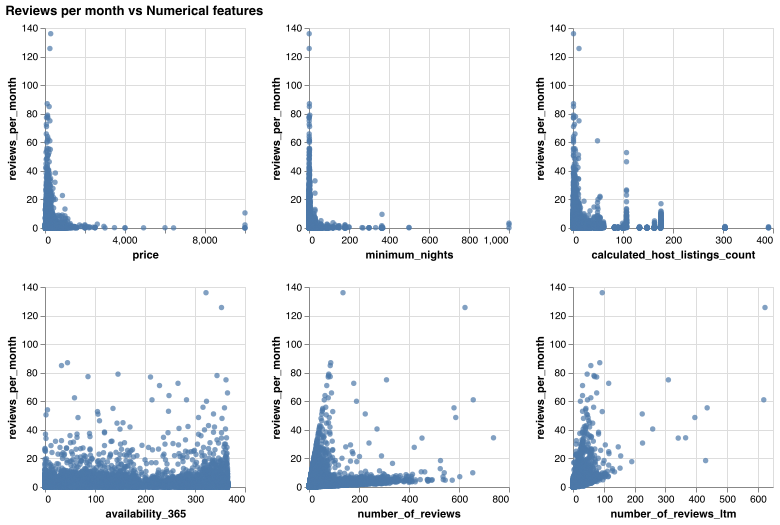
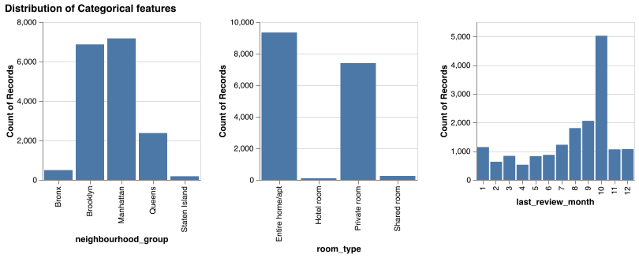
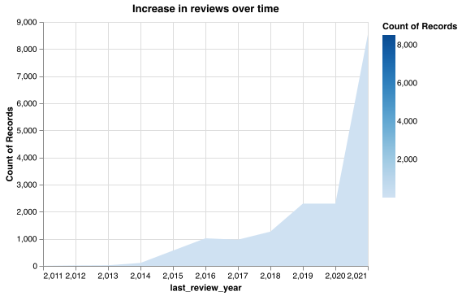
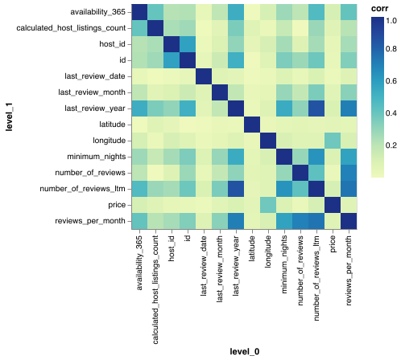

Exploratory Data Analysis
Exploratory Data Analysis¶
After dropping unwanted columns, the data was split into training and test sets and EDA was done on the training set. The dataset consists of numeric as well as categorical features. The relation between the target and the numerical columns as well as the categorical columns is as below.


The categorical columns are namely neighbourhood_group, room_type, last_review_month. From the above plot we observe that the reviews depend on the neighborhood as expected. The room types entire home/apartment and private rooms received largest number of reviews. This shows that more number of people prefer them. Also, reviews increased in the month of October. This may be due to some seasonal effect that has to be further studied

In the above graph, there is an increasing trend in the number of reviews over the years. We can draw the insight that the popularity for AirBnb has increased over time.
